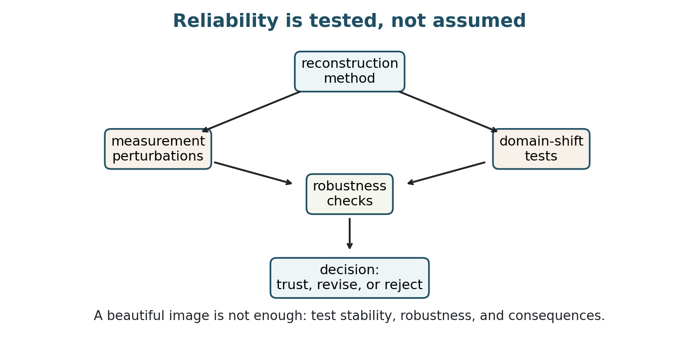
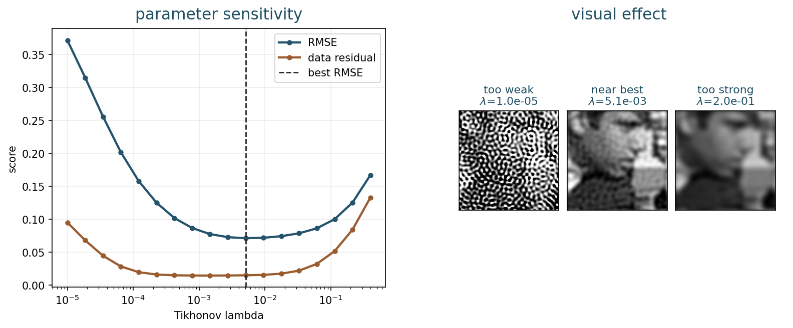
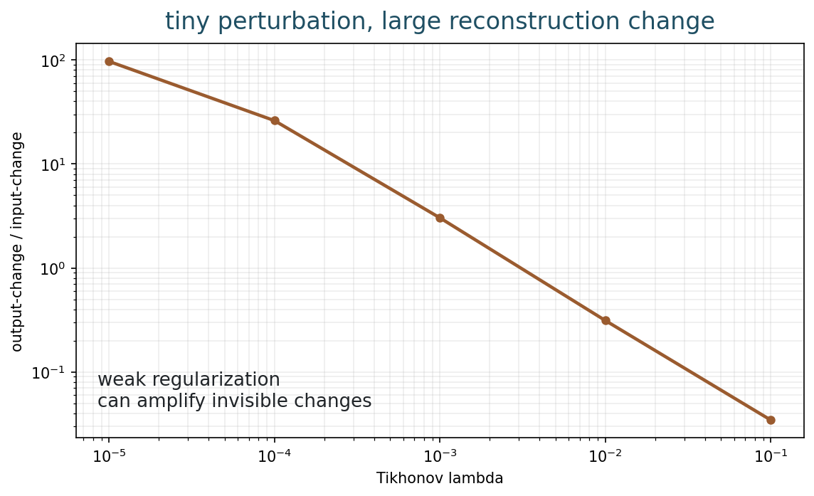
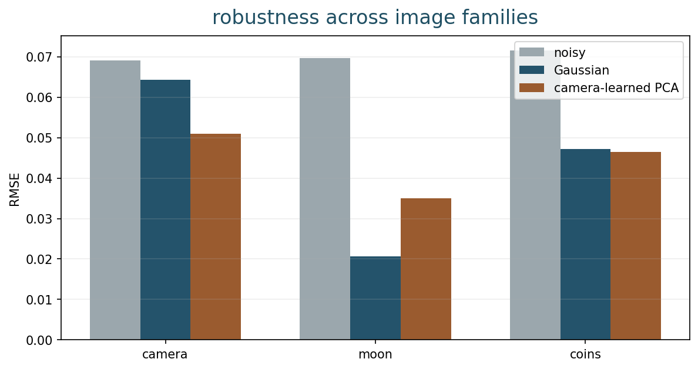
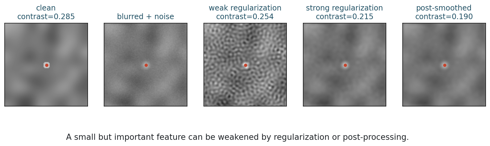
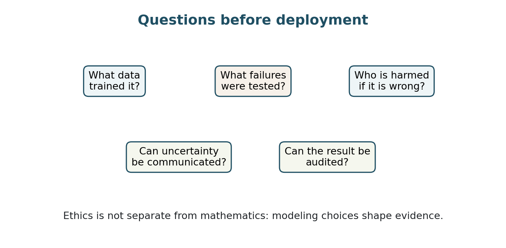

Stability, Robustness, and Ethics
Chapter 14
Slides | Notebook | Open in Colab
Learning Goals
By the end of this chapter, you should be able to:
- explain stability as sensitivity to perturbations;
- test how parameter choices affect a reconstruction;
- measure perturbation amplification in an inverse problem;
- design a robustness test across noise, models, and image families;
- distinguish visual plausibility from measurement support;
- document assumptions, failures, and limitations responsibly.
Reliability Is Tested
Previous chapters built more expressive reconstruction methods: Tikhonov regularization, variational models, TV, sparse priors, wavelets, learned patch priors, and plug-and-play denoisers.
The natural final question is not only:
Does the reconstruction look good?
It is also:
Under what conditions should we trust it?

Reliability is not a single final score. It is a loop of modeling, testing, stress testing, and documenting what has been learned.
In mathematical imaging, a beautiful output can still be unsafe if it is unstable, outside the tested domain, or visually plausible but unsupported by the measurements.
Why This Chapter Matters
This final chapter returns to the beginning of the course. We started with the inverse-problem question:
y = Ax+\eta, \qquad \text{recover } x \text{ from } y.
We then saw why this is difficult: information can be lost, noise can be amplified, and many images can be compatible with the same data. Regularization, sparse priors, wavelets, learned priors, neural networks, and plug-and-play algorithms are all ways to make reconstruction possible.
But the final question is not only whether reconstruction is possible. It is whether the result should be trusted for the intended use.
This is where the course becomes a habit of mind. Every reconstruction should be read as a mixture of:
- measured evidence;
- forward-model assumptions;
- noise assumptions;
- prior information;
- algorithmic choices;
- training-data influence, if learning is used.
Reliability means understanding that mixture well enough to say what the image supports, what it suggests, and what it cannot justify.
Stability
An imaging method is stable if small changes in the data tend to produce small changes in the reconstruction.
If y is the measured data and \hat{x}(y) is the reconstructed image, stability asks whether a small perturbation \delta y produces a controlled change
\hat{x}(y+\delta y)-\hat{x}(y).
This is the practical form of the third Hadamard condition from Chapter 5: continuous dependence on the data.
Perturbations are not only random noise. They can come from:
- sensor noise;
- calibration error;
- an imperfect blur kernel;
- discretization choices;
- preprocessing;
- a change in acquisition protocol;
- a mismatch between training data and test data.
The central danger is error amplification. Forward imaging often loses information: blur weakens high frequencies, masks discard observations, subsampling removes coefficients, and noise corrupts weak signal components. Trying to undo that loss can magnify small errors.
Stability Of The Whole Pipeline
Stability is not only a property of one formula. It is a property of the whole pipeline:
\text{raw data} \rightarrow \text{preprocessing} \rightarrow \text{reconstruction} \rightarrow \text{postprocessing} \rightarrow \text{decision}.
Small changes can enter at any stage. A different normalization, crop, interpolation rule, stopping criterion, or threshold can affect the final image. For learned methods, a small change in the input can interact with a nonlinear network in unexpected ways.
For this reason, a responsible stability test should perturb more than one thing when possible. Perturb the measured data, the assumed model, the parameter values, and the preprocessing choices. Then ask whether the conclusion changes.
Parameter Sensitivity
Regularization makes inverse problems more stable, but the amount of regularization matters.
For Tikhonov regularization,
\hat{x}_\lambda = \arg\min_x \frac12\|Ax-y\|_2^2 + \frac{\lambda}{2}\|Lx\|_2^2,
the parameter \lambda controls the balance between data consistency and prior smoothness.

The reconstruction can change substantially as \lambda moves from weak to strong regularization.
Weak regularization often:
- fits unstable directions;
- amplifies noise;
- gives a low data residual but poor image quality.
Strong regularization often:
- suppresses noise and artifacts;
- also suppresses details;
- may fit the data poorly.
The goal is not to find a magic value of \lambda. The goal is to understand whether there is a reasonable interval of parameter values where the result is stable and scientifically meaningful.
If a conclusion depends on one extremely precise parameter value, that conclusion is fragile. A robust conclusion should survive a reasonable neighborhood of choices. This is especially important in student projects: it is better to show a parameter range with clear tradeoffs than to present one polished image with no explanation of how it was obtained.
Perturbation Amplification
A simple stability diagnostic is to perturb the data and compare relative input and output changes.
Take an observation y and add a small perturbation \delta y. Compute
\frac{\|\delta y\|}{\|y\|} \qquad\text{and}\qquad \frac{\|\hat{x}(y+\delta y)-\hat{x}(y)\|}{\|\hat{x}(y)\|}.
The ratio
\frac{ \|\hat{x}(y+\delta y)-\hat{x}(y)\|/\|\hat{x}(y)\| }{ \|\delta y\|/\|y\| }
is an empirical amplification factor.

Weak regularization can make the reconstruction much more sensitive to small perturbations in the data.
This diagnostic is useful even when the exact ground truth is not available. It asks whether the reconstruction method reacts smoothly to small measurement changes.
The amplification factor is not a universal score. It depends on the perturbation direction, the norm, and the reconstruction method. Still, it is useful because it turns the abstract idea of stability into an experiment students can run.
When possible, repeat the test with several perturbations. If one small perturbation causes a large change in a task-critical region, that is evidence of fragility even if the average metric looks acceptable.
Singular Values And Stability
For a linear forward model y=Ax+\eta, singular values explain why inversion can be unstable.
If
A = U\Sigma V^\top,
then direct inversion divides by singular values:
x = \sum_i \frac{u_i^\top y}{\sigma_i}v_i.
When \sigma_i is small, the factor 1/\sigma_i is large. Noise or modeling error in the corresponding data direction is amplified.
Regularization limits this amplification. For example, standard Tikhonov filtering replaces 1/\sigma_i by
\frac{\sigma_i}{\sigma_i^2+\lambda}.
This factor does not explode when \sigma_i is small. The price is bias: some true details are also reduced.
This is the same tradeoff that appeared throughout the course. Stability is bought by refusing to trust weakly measured directions too much. The question is which details are sacrificed, and whether those details matter for the task.
Robustness
Stability asks about sensitivity to small changes. Robustness asks whether a method continues to work acceptably across a meaningful range of conditions.
A method is robust only relative to a testing plan. Useful axes include:
- noise level;
- blur or sampling mismatch;
- parameter settings;
- image class;
- acquisition device;
- rare but important structures;
- preprocessing choices.
A minimal robustness table might look like this:
| Test | Question |
|---|---|
| noise sweep | Does performance degrade smoothly? |
| parameter sweep | Is there a wide safe range? |
| model mismatch | What happens if A is wrong? |
| image family shift | Does the prior overfit one domain? |
| small feature test | Are weak structures preserved? |
Robustness is not proven by one successful example. It is supported by a pattern of successful and failed tests.
Robustness For Learned Methods
For learned imaging, robustness testing must include the training distribution. A method may be stable for images similar to the training set and unreliable outside it.
Useful learned-method tests include:
- train/test domain comparison;
- noise levels not seen during training;
- forward models different from the simulated training model;
- rare structures or unusual cases;
- adversarial or worst-case perturbations when appropriate;
- comparison with simple model-based baselines.
The goal is not to make learning look bad. The goal is to know where the learned prior is useful and where it becomes an unsupported assumption.
Domain Robustness
Learned priors are powerful, but they learn from the examples they see.

A denoiser trained on one image family can be less reliable on another image family.
This is not a defect of learning itself. It is an assumption that must be named. The training set acts like a prior: it says which images and structures are expected.
In inverse problems, overfitting can mean:
- excellent results on benchmark images;
- poor behavior on new acquisition conditions;
- learned texture that is not supported by the data;
- hidden failure on rare cases;
- performance differences across populations, instruments, or sites.
The ethical issue is not only average performance. A method that works well on average can still fail systematically for a subgroup, acquisition device, or rare structure. Robustness should therefore be reported across meaningful categories, not only as one global number.
Hallucination
In reconstruction, hallucination means producing structure that looks plausible but is not supported by the measurements.
This can happen with learned methods, but the general risk is older than deep learning. Any strong prior can add, remove, or reshape information when the data are insufficient.
There are two symmetric dangers:
- a false positive: the method invents a structure;
- a false negative: the method removes a real but weak structure.
Both matter. Which one is worse depends on the task.
In some applications, false positives are costly: a reconstruction may suggest a defect, lesion, object, or event that is not actually supported by the data. In other applications, false negatives are worse: a method may remove a weak but important signal. The evaluation should match the risk.
This is why “looks good” is not a scientific criterion by itself. The reconstruction must be evaluated against the task and the possible harm of different errors.
Small Feature Risk
Small or low-contrast features are often the hardest to handle responsibly. They may be exactly the features that matter.

Strong regularization and smoothing can make an image look calmer while reducing the contrast of a small real feature.
This is why image quality cannot be judged only by smoothness or visual appeal. A visually pleasing reconstruction may be worse for a detection task.
For a small-feature test, measure something task-specific, for example:
- feature contrast;
- localization error;
- detection rate;
- false positive rate;
- false negative rate.
Data Consistency Is Necessary
An output should be compatible with the measurement model:
A\hat{x}\approx y.
Data consistency is necessary, but it is not sufficient. In an ill-posed inverse problem, many images can explain the same measurement within noise tolerance.
This is exactly why priors are useful, and also why priors must be tested. The reconstruction is a combination of measurement evidence and modeling assumptions.
Data consistency should be interpreted with the noise model. Exact equality A\hat{x}=y is not always desirable when y is noisy. A good reconstruction should fit the data within the expected noise and model error, not necessarily fit every fluctuation.
For learned reconstructions, data consistency is a guardrail. It does not prove truth, but it can reveal when a visually plausible output has drifted away from the measurement.
Uncertainty
A reconstruction is usually not complete without uncertainty. In an inverse problem, uncertainty can come from noise, missing data, model mismatch, parameter choice, and training distribution.
Uncertainty can be communicated in several ways:
- show sensitivity to noise or perturbations;
- report confidence intervals for scalar measurements;
- display uncertainty maps when available;
- compare multiple plausible reconstructions;
- identify regions dominated by prior assumptions.
The last point is essential. If a region is weakly measured and mostly determined by the prior, the user should know that.
Evaluation
No single evaluation number is enough.
When ground truth is available, report quantitative metrics such as RMSE or PSNR. But also check whether those metrics hide localized failures.
When ground truth is not available, use indirect tests:
- data residuals;
- perturbation sensitivity;
- parameter sweeps;
- model mismatch tests;
- comparison with simpler baselines;
- expert or domain review;
- uncertainty or confidence reporting.
For project reports, a failure case is not a weakness. It is evidence that the method has been tested honestly.
Reproducibility
A reconstruction should be reproducible enough that another person can understand how it was produced. This requires more than code.
Document:
- software versions and random seeds when relevant;
- preprocessing steps;
- parameter values;
- training data or simulated data generation;
- stopping criteria;
- evaluation scripts;
- known nondeterminism.
Reproducibility is part of ethics because it allows others to inspect, challenge, and improve the result.
Ethics And Responsibility
Mathematical imaging methods can influence decisions in science, engineering, medicine, remote sensing, cultural heritage, and security. The same reconstruction can be both mathematically interesting and socially consequential.

Before deployment, ask who could be harmed by false positives, false negatives, missing uncertainty, or untested domain shift.
Ethical failure modes include:
- a method works worse for some populations or acquisition sites;
- a reconstruction removes rare but important signs;
- a plausible output is treated as direct measurement;
- users are not told when the method is outside its tested domain;
- code and parameters are not reproducible.
Ethics here is not separate from mathematics. Stability, robustness, reproducibility, and honest communication are part of responsible modeling.
Common Mistakes
A first mistake is to treat a high-quality visual result as proof. It is evidence of visual plausibility, not necessarily measurement support.
A second mistake is to report only the best example. Reliability is learned from variation: easy cases, hard cases, parameter sweeps, and failure cases.
A third mistake is to hide prior influence. Every method uses assumptions. The responsible move is to name them.
A fourth mistake is to think ethics begins after the mathematics. In imaging, the mathematical choices determine what can be seen, hidden, amplified, or invented.
What To Document
For a reconstruction method, document:
- the forward model and its assumptions;
- the noise model;
- the regularizer or learned prior;
- training data, if any;
- parameter choices;
- validation cases;
- known failures;
- uncertainty and limitations;
- intended use and non-use.
This documentation makes the reconstruction inspectable. It also helps future users understand what the image is, and what it is not.
Final Course Synthesis
The course can be summarized in one line:
\text{reconstruction} = \text{measurement consistency} + \text{prior information} + \text{optimization or learning}.
Classical methods make the prior explicit. Learned methods often make the prior more powerful but less transparent. Hybrid methods try to keep the best of both: physics and measurement consistency from inverse problems, expressive image models from data.
The goal is not to choose one camp forever. The goal is to ask the right questions:
- What information was measured?
- What information was assumed?
- What was learned from examples?
- What is stable under perturbation?
- What fails under domain shift?
- What should the user be told?
That is the path from mathematical imaging to neural imaging without losing scientific discipline.
Project Checkpoint
By the end of the course project, your report should include:
- the mathematical model;
- the reconstruction algorithm;
- a parameter study;
- results on multiple cases;
- a failure or limitation analysis;
- code and reproducibility notes.
For the oral defense, both teammates should be able to explain:
- the forward model;
- the inverse problem;
- the role of the prior or regularizer;
- the numerical algorithm;
- the main success;
- the main limitation.
Computation
The Week 14 notebook makes the reliability checks concrete.
Use it to:
- Sweep Tikhonov \lambda.
- Measure perturbation amplification.
- Track small-feature contrast.
- Compare denoising across image families.
- Write a reliability checklist for the project.
To regenerate the Week 14 examples from the repository root:
python3 examples/week14_stability_robustness.py
python3 examples/make_week14_figures.py
python3 scripts/build_notebooks.py
./scripts/quarto renderThe notebook is the best place to change parameters and see how sensitive the conclusions are.
Exercises
Parameter sensitivity. Choose two nearby values of \lambda in a Tikhonov problem. Compare the data residual, RMSE if ground truth is available, and visual detail.
Perturbation test. Add a small perturbation to the data. Compute the empirical amplification factor. Repeat for weak and strong regularization.
Robustness table. For your course project, make a table with at least four tests: a noise sweep, a parameter sweep, a model mismatch test, and a failure case.
Small-feature test. Construct or choose an image with a weak localized feature. Measure whether the reconstruction preserves or removes it.
Ethics paragraph. Write five sentences explaining when your method should not be used.
Uncertainty statement. Identify one region or quantity in your reconstruction that is weakly supported by the data. Explain how you would communicate that uncertainty.
Takeaways
- Ill-posed inverse problems require stability checks.
- A good-looking image can still be unreliable.
- Learned priors inherit assumptions from training data.
- Robustness must be tested across realistic and stressful cases.
- Ethical reconstruction means documenting assumptions, failures, and limits.
- The final goal is not only reconstruction, but trustworthy reconstruction.